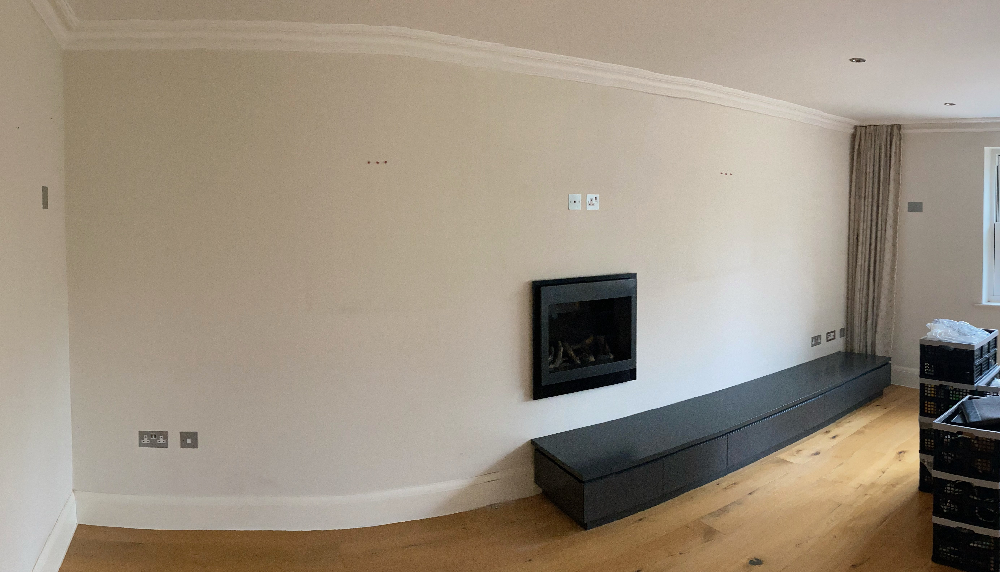

The photo above has power and aerial sockets above the fireplace for a wall-mounted TV. The dining zone is to the left (next to the kitchen). That makes the right half of the room the lounge area, so a wall-mounted TV should be offset to the right. There is another set of aerial and satellite sockets at the right-hand end of the wall! We are also missing an AV duct from behind such a TV for HDMI cables. Ideally the wall mount would be in a recess, subject to construction constraints. The original wiring diagram implies they should be in that preferred offset location. There are telephone sockets in both the left and right low socket clusters. The property is flooded with power, aerial, and telephone ports, which is nice. More unusually, it has many blanks; two are visible high on the adjacent walls in the photo above. Telephone sockets are less useful these days, so the second tranch of work would be flood the property with structured network cabling to a mini patch panel in the cupboard by the BT master socket.
There is a bundle of disconnected data / signal cabling near the master socket. It was assumed these were telephone extensions, and this would be a pulling exercise to replace the (dead) phone ports with ethernet ones. Instead, the master socket and all the extension ports are live. Curious about the cable bundle and all the blanks, I opened everything up. All the blanks have data cabling! About 50% is certified Cat 5E, with the remainder being unlabelled, low-grade 4-pair cable that may match the disconnected bundle. It therefore becomes a cable tracing and testing exercise. Most of the blanks are in high locations, which is hardly ideal. Given the length of cables, there is limited scope to move them without splices, pulls, or complete replacement. I do not know if the questionable quality of some of the cable leaves much scope for splicing.
The wiring diagram indicates that one of the two telephone ports in the lounge should be a data port rather than a telephone port. The closest match on the wiring diagram for the blanks are the red runs. Unfortunately, those aren't identified in the key. Bizarrely, there are data cable blanks in the bathroom and en-suite! The wiring diagram indicates provisions for Aquavision IP-rated TVs.
Construction:
Internet:
Hopefully, I have provided enough material for you to say whether you can undertake this project, and outline a quote, subject to survey. There is a lot going on there, so please call if you have any queries.